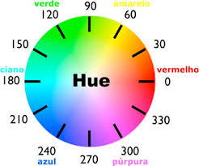

Cores
Existem várias formas da gente definirmos cores utilizando CSS
- Cores Pré Definidas
- Palavra chave "currentcolor"
- Hexadecimal
- Hexadecimal com transparencia
- RGB
- RGBA
- HSL
- HSLA
HSL
hsl(hue, saturation, lightness)
-
HUE (matiz) é o grau na roda de cores que vai de 0 a 360 graus

- 0 ou 360 é vermelha
- 120 é verde
- 240 é azul
-
Saturation (saturação) valor porcentual
- 0% um tom de cinza
- 100% cor total
-
Lightness (luminosidade) luminosidade da cor